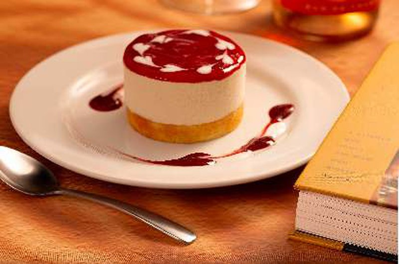

Todos os pratos da casa.
Massas artesanais, carnes, risotos, peixes e sobremesas — as porções são generosas e servem a partir de 2 pessoas.
Prefere o PDF original (com carta de vinhos)? Baixe aqui ↗Entradas & Sopas
Antepasto self-service e sopas caseiras. Para os pequenos até 8 anos, o cardápio Piccolino é cortesia da casa.
Antepasto (100 gramas)
R$ 27,00Self-service, servido à vontade no centro do salão.
Cesto de Pão Italiano
R$ 25,00A manteiga é por nossa conta.
Canja de Galinha
R$ 136,00Caldo de galinha com arroz, galinha desfiada e cenoura ralada.
Capeletti in Brodo
R$ 136,00Caldo de galinha, capeletti, galinha desfiada, cenoura ralada e salsinha.
Creme de Palmito
R$ 136,00Creme de leite, gema de ovo e molho branco.
Piccolino (até 8 anos)
CortesiaSpaghetti ao sugo, gnocchi à bolognesa ou batata frita.
Escolha a massa e o molho.
Ao Sugo
R$ 228,00Tomates frescos, apurados com temperos aromáticos.
Massas sugeridas: todas
Ao Alho e Óleo
R$ 228,00Alho, óleo e salsinha.
Massas sugeridas: todas
À Napolitana
R$ 228,00Molho com tomates frescos, azeitonas pretas e temperos aromáticos.
Massas sugeridas: todas
Ao Pesto
R$ 228,00Azeite, alho, pinole, nozes, parmesão e manjericão.
Massas sugeridas: spaghetti / fettuccine
Com Brócolis
R$ 228,00Brócolis no azeite, alho e azeitonas pretas.
Massas sugeridas: spaghetti / penne
À Alfredo
R$ 228,00Manteiga, creme de leite, parmesão e presunto cru tipo Parma.
Massas sugeridas: fettuccine / penne
À Arrabiata
R$ 228,00Molho à napolitana e pimenta dedo de moça.
Massas sugeridas: spaghetti / penne
À Matriciana
R$ 228,00Molho à napolitana, bacon e temperos aromáticos.
Massas sugeridas: spaghetti / penne
À Palermitana
R$ 236,00Molho à napolitana, parmesão, manjericão, creme de leite e nozes.
Massas sugeridas: spaghetti / penne
À Carbonara (moda da casa)
R$ 236,00Bacon, gemas de ovos, creme de leite, tomate cereja, parmesão, cebola, salsinha e manjericão.
Massas sugeridas: spaghetti / penne
Com Linguiça Calabresa
R$ 236,00Molho napolitano com linguiça calabresa fatiada, alho, cebola, tomate em cubos, salsinha e manjericão.
Massas sugeridas: fettuccine / penne
À Nina
R$ 228,00Berinjela, mozzarella, tomate em cubos, salsinha e manjericão.
Massas sugeridas: penne
Com Bracciola
R$ 242,00Bife à rolê recheado com bacon, cenoura, parmesão e azeitonas pretas no molho ao sugo.
Massas sugeridas: todas
Com Ragù de Ossobuco
R$ 242,00Guisado de ossobuco, vinho tinto, tomate em cubos, salsinha e manjericão puxado no próprio molho.
Massas sugeridas: todas
Com Ragù de Cabrito
R$ 242,00Guisado de cabrito, vinho tinto, cebola e temperos aromáticos puxado no próprio molho.
Massas sugeridas: todas
Tiras de Filet Mignon e Funghi Secchi
R$ 298,00Tiras de filet mignon, vinho tinto, funghi secchi, cebola e temperos aromáticos ao molho rotí e napolitano.
Massas sugeridas: todas
À Bolognesa
R$ 242,00Molho ao sugo, carne moída, vinho tinto, cebola e temperos aromáticos.
Massas sugeridas: todas
À San Marco
R$ 298,00Iscas de filet mignon, creme branco, cebola e funghi secchi.
Massas sugeridas: spaghetti / penne
À Mastroianni
R$ 298,00Iscas de filet mignon, funghi secchi, cebola e salsinha ao molho napolitano.
Massas sugeridas: spaghetti / fusilli / penne
À Mamma di Lucca
R$ 298,00Iscas de filet mignon, molho de tomate, manteiga, cebola, creme de leite e gorgonzola.
Massas sugeridas: spaghetti / penne
À Siciliana
R$ 298,00Iscas de filet mignon, molho à napolitana, cebola, alcaparras, azeitonas pretas, salsinha e manjericão.
Massas sugeridas: spaghetti / fusilli / penne
À Romanesca
R$ 264,00Molho branco, ervilhas, presunto, champignon e parmesão.
Massas sugeridas: spaghetti / fusilli
Massas Gratinadas
Com Mozzarella
R$ 228,00Molho ao sugo, mozzarella e parmesão.
Massas sugeridas: fettuccine / penne
À Benedetto di Lucca
R$ 228,00Molho ao sugo, manteiga, creme de leite e gorgonzola.
Massas sugeridas: fettuccine / penne
Ao Creme de Funghi Secchi
R$ 264,00Manteiga, vinho branco, creme de leite, cebola e funghi secchi.
Massas sugeridas: fettuccine / penne
Ao Quadrifoglio
R$ 264,00Molho branco, catupiry, nozes, temperos aromáticos e manjericão.
Massas sugeridas: penne
Aos Quatro Queijos
R$ 264,00Molho branco, gorgonzola, parmesão, provolone e catupiry.
Massas sugeridas: spaghetti / fusilli
À Fiorentina
R$ 232,00Molho branco, espinafre e parmesão.
Massas sugeridas: spaghetti / fusilli
Ao Creme Branco
R$ 228,00Molho branco.
Massas sugeridas: spaghetti / fusilli
Ao Creme Rosado
R$ 228,00Molho branco e molho vermelho.
Massas sugeridas: spaghetti / fusilli
À La Dolce Vita
R$ 264,00Molho branco, ervilhas, presunto, frango desfiado e parmesão.
Massas sugeridas: spaghetti / fusilli
Com Champignon
R$ 264,00Molho branco, champignon e parmesão.
Massas sugeridas: spaghetti / fusilli
À Don Camillo
R$ 342,00Molho branco aos quatro queijos. Acompanha 5 escalopes de filet mignon grelhados.
Massas sugeridas: todas
À Casa Nova
R$ 342,00Molho branco e catupiry. Acompanha 5 escalopes de filet mignon grelhados.
Massas sugeridas: todas
À San Giovanni
R$ 298,00Iscas de filet mignon ao molho rosé.
Massas sugeridas: fettuccine / penne
Massas & Mar
À Carbonara de Camarões
R$ 472,0018 camarões, bacon, gemas de ovos, creme de leite, tomate cereja, parmesão, cebola, salsinha e manjericão.
Com Frutos do Mar Clássico
R$ 484,0018 camarões, mariscos, polvo e lula ao molho napolitano com tomate em cubos, manjericão e salsinha.
Com Camarões
R$ 472,0018 camarões, molho napolitano, tomate em cubos, salsinha e manjericão.
À Genova
R$ 308,00Lâminas de bacalhau, azeite, temperos aromáticos, tomates frescos, azeitonas pretas e folhas de manjericão.
À Isquia
R$ 308,00Lâminas de bacalhau, azeite, tomates frescos, salsinha, manjericão e temperos aromáticos.
Mar e Orto
R$ 308,00Lâminas de bacalhau, azeite, temperos aromáticos, cubos de tomate fresco, azeitonas verdes e alcaparras.
Alla Marietta
R$ 308,00Lâminas de bacalhau, creme de leite, tomate em cubos, manjericão e cebola à juliana e rúcula.
All Tonno
R$ 264,00Molho à napolitana, atum, alcaparras, salsinha, tomate em cubos e azeitonas pretas.
À Putanesca
R$ 264,00Molho à napolitana, aliche, alcaparras, salsinha, tomate em cubos e azeitonas pretas.
À Siracusa
R$ 472,00Molho branco aos quatro queijos, gorgonzola, parmesão, provolone e catupiry. Acompanha 18 camarões à milanesa.
À Malfitana
R$ 472,00Molho branco, catupiry, cebola e temperos aromáticos. Acompanha 18 camarões na manteiga.
À Pescatore
R$ 308,00Lascas de bacalhau, brócolis, azeitonas pretas, lascas de alho frito e salsinha.
Massas sugeridas: penne
Massas Artesanais com Recheio
- Canelloni de Ricota — recheio de ricota, espinafre, amêndoa e uva passa
- Canelloni de Palmito — recheio de palmito
- Tortelloni Verde — recheio de ricota, espinafre e nozes
- Ravioli de Ricotta — recheio de ricota, espinafre e nozes
- Mezzaluna — recheio de mozzarella, tomate seco e manjericão
- Capeletti — recheio de carne
- Conchiglia — recheio de quatro queijos, catupiry, provolone, parmesão e gorgonzola
Ao Sugo
R$ 238,00Tomates frescos apurados com temperos aromáticos.
À Palermitana
R$ 258,00Molho à napolitana, parmesão, creme de leite, manjericão e nozes.
À Napolitana
R$ 258,00Molho com tomates frescos, azeitonas pretas e temperos aromáticos.
Com Bracciola
R$ 258,00Bife à rolê recheado com bacon, cenoura, parmesão e azeitonas pretas no molho ao sugo.
À Bolognesa
R$ 258,00Molho ao sugo, carne moída, vinho tinto, cebola e temperos aromáticos.
Com Linguiça Calabresa
R$ 238,00Molho napolitano com linguiça calabresa fatiada, alho, cebola, tomate em cubos, salsinha e manjericão.
À Mamma di Lucca
R$ 304,00Iscas de filet mignon, molho de tomate, manteiga, cebola, creme de leite e gorgonzola.
À San Marco
R$ 304,00Iscas de filet mignon, cebola, creme branco e funghi secchi.
Noite de Napoli
R$ 304,00Iscas de filet mignon, creme de leite, cebola, salsinha e folhas de manjericão.
À Mastroianni
R$ 304,00Iscas de filet mignon, funghi secchi, cebola e salsinha ao molho napolitano.
À Siciliana
R$ 304,00Iscas de filet mignon, molho à napolitana, cebola, alcaparras, azeitonas pretas, salsinha e manjericão.
À Romanesca
R$ 258,00Molho branco, ervilhas, presunto, champignon e parmesão.
Aos Quatro Queijos
R$ 268,00Molho branco, gorgonzola, parmesão, provolone e catupiry.
Ao Forno com Mozzarella
R$ 268,00Molho ao sugo, mozzarella e parmesão.
À Fiorentina
R$ 268,00Molho branco, espinafre e parmesão.
Ao Creme Branco
R$ 268,00Molho branco.
Ao Creme Rosado
R$ 268,00Molho branco e molho vermelho.
À La Dolce Vita
R$ 268,00Molho branco, ervilhas, presunto, frango desfiado e parmesão.
Com Champignon
R$ 268,00Molho branco, champignon e parmesão.
À Benedetto di Lucca
R$ 268,00Molho ao sugo, manteiga, creme de leite e gorgonzola.
Ao Creme de Funghi Secchi
R$ 268,00Manteiga, vinho branco, creme de leite e funghi secchi.
Ao Quadrifoglio
R$ 268,00Molho branco, catupiry, nozes, temperos aromáticos e manjericão.
À Don Camillo
R$ 352,00Molho branco aos quatro queijos. Acompanha 5 escalopes de filet mignon grelhados.
À Casa Nova
R$ 352,00Molho branco e catupiry. Acompanha 5 escalopes de filet mignon grelhados.
Lasagnas Artesanais Gratinadas
- Massa Branca — recheio de creme branco, presunto e mozzarella
- Massa Verde — recheio de carne moída e mozzarella
Ao Sugo
R$ 258,00Tomates frescos, apurados com temperos aromáticos.
À Napolitana
R$ 258,00Molho com tomates frescos e temperos aromáticos.
À Bologna
R$ 272,00Molho ao sugo, carne moída, vinho tinto e temperos aromáticos.
Ao Forno com Mozzarella
R$ 258,00Molho ao sugo, mozzarella e parmesão.
Com Champignon
R$ 258,00Molho branco, champignon e parmesão.
Com Catupiry
R$ 258,00Creme branco e catupiry.
Aos Quatro Queijos
R$ 258,00Molho branco, gorgonzola, parmesão, provolone e catupiry.
À Romanesca
R$ 258,00Molho branco, ervilhas, presunto, champignon e parmesão.
À Fiorentina
R$ 258,00Molho branco, espinafre e parmesão.
Ao Creme Branco
R$ 258,00Molho branco.
Ao Creme Rosado
R$ 258,00Molho branco e molho vermelho.
À La Dolce Vita
R$ 258,00Molho branco, ervilhas, presunto, frango desfiado e parmesão.
À Benedetto di Lucca
R$ 258,00Molho ao sugo, creme de leite e gorgonzola.
Ao Quadrifoglio
R$ 258,00Molho branco, catupiry, nozes, temperos aromáticos e manjericão.
Ao Creme de Funghi Secchi
R$ 258,00Manteiga, vinho branco, creme de leite e funghi secchi.
O Que Sempre Agrada
Filet à Parmigiana
R$ 336,00Ao forno com mozzarella, molho ao sugo e parmesão. Acompanhamento à escolha: arroz e batatas fritas, ou massa ao sugo.
Frango à Parmigiana
R$ 292,00Ao forno com mozzarella, molho ao sugo e parmesão. Acompanhamento à escolha: arroz e batatas fritas, ou massa ao sugo.
Berinjela à Parmigiana
R$ 258,00Ao sugo intercalada com mozzarella e parmesão. Acompanhamento à escolha: arroz e batatas fritas, ou massa ao sugo.
Polpettone
R$ 318,00Ao forno recheado de mozzarella, catupiry e brie, molho ao sugo e parmesão. Acompanhamento à escolha: arroz e batatas fritas, ou massa ao sugo.
Ossobuco
R$ 348,002 peças de ossobuco cozidos em fogo brando, com molho de vinho, condimentos e temperos aromáticos. Acompanhamento à escolha: massa ao sugo, ao creme branco ou risoto à parmegiana com açafrão.
Cabrito ao Forno
R$ 348,00Assado em pedaços com vinho branco, condimentos e temperos aromáticos. Acompanha arroz, batatas coradas e brócolis, ou massa ao sugo / ao alho e óleo.
Perna de Cabrito ao Forno
R$ 444,00Assado ao vinho branco com legumes e condimentos aromáticos. Mesmo acompanhamento do cabrito ao forno.
Camarão à Grega
R$ 474,0018 camarões empanados com mozzarella. Acompanha batata palha e arroz à grega com legumes, cebola e salsinha.
Peito de Frango ao Molho Madeira e Champignon
R$ 252,00Acompanha risoto de palmito, mozzarela de búfala e rúcula.
Filet Mignon
Medalhões à Brasileira
R$ 346,004 unidades. Acompanha farofa, batatas fritas e arroz branco.
Medalhões ao Molho Madeira e Champignon
R$ 346,004 unidades. Acompanha arroz de brócolis e purê de batatas.
Medalhões ao Molho Mostarda
R$ 346,004 unidades. Acompanha arroz à piemontese puxado no molho branco com champignon, salsinha e parmesão ralado.
Medalhões à Marianina
R$ 346,004 unidades de medalhão ao poivre. Acompanha massa fresca ao molho branco e batatas gratin com salsinha.
Medalhões ao Vinho
R$ 346,004 unidades de filet mignon ao molho de vinho tinto com ervas finas, condimentos e temperos aromáticos. Acompanha risoto de funghi secchi.
Medalhão à Oswaldo Aranha
R$ 346,00Acompanha arroz branco, batata gratin, alcaparras e farofa de palmito.
Medalhão à Francis Bacon
R$ 346,00Envolvido em bacon. Acompanha batatas coradas e arroz à grega.
Escalopes de Filet Mignon Planti à Milanesa
R$ 346,005 unidades. Acompanha batatas fritas e arroz branco.
Escalopes al Limone
R$ 346,005 unidades de filet mignon ao molho de limão. Acompanha risoto de açafrão.
Escalopes à Romana
R$ 346,005 unidades de filet mignon à dorê com parmesão e salsinha. Acompanha ervilhas, batatas coradas e arroz.
Escalopes à Diana
R$ 346,005 unidades ao molho de vinho tinto. Acompanha arroz no próprio molho, champignon e salsinha.
Escalopes à Parigi
R$ 346,005 unidades de escalope grelhado. Acompanhamento à escolha: massa na manteiga, ao alho e óleo, ao sugo ou ao molho branco.
Escalopes Grelhados
R$ 286,005 unidades.
Gennarino di Napoli
R$ 346,00Filé empanado recheado com presunto e mussarela. Acompanha arroz piemontese e batatas coradas ao molho de aliche, cebola, molho madeira e creme de leite.
Risotos
Alla Venezia
R$ 486,00Arroz com 18 camarões, frutos do mar, vinho branco, azeite, manteiga, salsinha, tomate em cubos e parmesão.
Al Funghi
R$ 276,00Arroz com cogumelos, vinho branco, azeite, manteiga e parmesão.
Coração de Palmito
R$ 276,00Arroz com coração de palmito, mozzarella, rúcula, vinho branco, azeite, salsinha, manteiga e parmesão.
Com Lâminas de Bacalhau
R$ 324,00Arroz, azeite, manteiga, vinho branco, parmesão, brócolis, alho, cebola, salsinha, azeitonas verdes e ovos cozidos.
Com Ragù de Ossobuco
R$ 284,00Arroz, açafrão, vinho branco, guisado de ossobuco no próprio molho, tomate em cubos, salsinha, manjericão e funghi secchi.
Do Mar
Pescada Amarela Grelhada ao Molho de Ervas, Manteiga e Vinho Branco
R$ 298,00Acompanha risoto primavera: arroz, vinho branco, espinafre, ervilha, cenoura e brócolis.
Pescada Amarela Grelhada com Legumes ao Alho e Óleo
R$ 298,00Pescada Amarela Grelhada com Legumes na Manteiga
R$ 298,00Pescada Amarela Grelhada ao Molho de Alcaparras, Vinho Branco e Manteiga
R$ 298,00Acompanha arroz com brócolis.
Acompanhamentos
Sobremesas
Preço padrão / com adicional de sorvete de chocolate ou creme.

Cheesecake de mascarponeCheesecake de Mascarpone
R$ 38 / R$ 48Suave creme de mascarpone com zabaione, marsala, base de pão de ló, coberto com geleia de goiaba. Servido com calda de morango e iogurte.
Crème Brûlée
R$ 38 / R$ 48Base de creme de leite, ovos e baunilha, aromatizado com limão siciliano e gratinado com açúcar cristal.
Petit Gateau
R$ 38 / R$ 48Mini bolo de chocolate recheado de calda quente de chocolate. Acompanha bola de sorvete de creme e calda de chocolate.
Pudim de Leite
R$ 38 / R$ 48Pudim de leite tradicional com chantilly e ameixa.
Tiramissù
R$ 38 / R$ 48Suave creme de mascarpone com zabaione, marsala, biscoito champagne umedecido em café, pedaços de chocolate e cacau em pó. Servido com calda de morango, chocolate e iogurte.
Torta Três Mousses
R$ 38 / R$ 48Três camadas de mousse — chocolate meio amargo, ao leite e branco — com base de pão de ló de chocolate. Servido com calda de chocolate e iogurte.
Creme de Papaya
R$ 38 / R$ 48Sorvete de creme batido com mamão papaya e licor de cassis.
Frutas da Estação
R$ 38 / R$ 48Abacaxi ou mamão papaya.
Sorvete Misto
R$ 383 bolas de sorvete (chocolate, creme e misto). Acompanha castanha de caju e calda de chocolate.
Escolheu o que vai pedir?
Reserve sua mesa e garanta o horário — as porções são generosas e servem a partir de 2 pessoas.